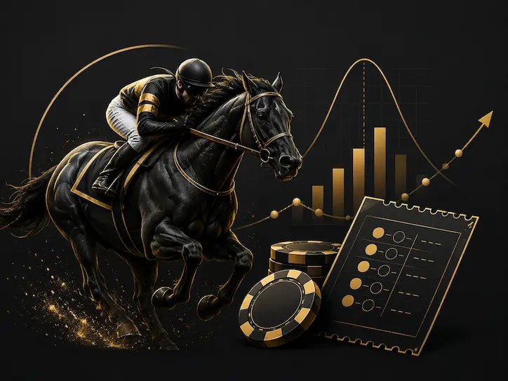

Win
Requirement: Your horse must finish 1st.
Use case: Most direct way to compare your opinion vs market odds.
Lower complexity
This page turns horse racing from "gut feel" into a repeatable process. Learn win/place/show and exotic bets, convert odds to probability, estimate payout reality after takeout, and run fun simulations to compare favorites vs longshots.
Interactive casino simulators, strategy trainers, bankroll tools, and gambling math explained without false certainty.
Start here if the racing form looks overwhelming. These are the core bets and how variance changes as complexity increases.
Requirement: Your horse must finish 1st.
Use case: Most direct way to compare your opinion vs market odds.
Lower complexity
Requirement: Horse finishes 1st or 2nd.
Use case: Higher hit rate than Win, usually smaller payoff.
Lower variance
Requirement: Horse finishes top 3.
Use case: Conservative bet type, lowest payout ceiling.
Most conservative
Requirement: Pick 1st and 2nd in exact order.
Use case: Better payouts, but far lower hit rate than Win/Place/Show.
Medium risk
Requirement: Pick top 3 in exact order.
Use case: High upside, heavy variance and long cold stretches.
High risk
Requirement: Pick top 4 in exact order.
Use case: Big headline payouts with very low hit frequency.
Very high risk
Fractional odds like 5/1 imply a rough win chance of 1 ÷ (5+1) = 16.7%. Bigger odds mean bigger payouts because expected win rate is lower.
Payout size is not value. Longshots create memorable wins, but most lose. Your edge only exists if market odds are better than true probability.
Track prices are pari-mutuel. Odds move with the pool and the house cut is already deducted before payout. Even decent handicapping can lose long-term if you overpay for risk.
Goal: Think like a price shopper, not a winner picker.
Use these calculators to understand what odds imply, what tickets cost, how to spot value edge, and how quickly bankroll risk can snowball.
Enter odds to see implied probability and decimal odds.
Ticket combinations and estimated cost are shown here. Actual payouts depend on final pool size and split with other winning tickets.
Enter market odds and your probability estimate to see whether the price offers value.
Estimate bust risk before your next session.
Educational simulation only. It illustrates variance and market price behavior, not guaranteed real-world outcomes.
Run a simulation to compare hit rate and profit swings.
Use this with the EV calculator and bankroll calculator to compare gambling variance across games.

A bettor might hit one 18/1 winner and feel unbeatable while ignoring 30 losing bets around it. This creates result bias — judging decisions by short-term outcomes instead of long-run expected value.
Important: Beating races is a pricing problem, not a prediction contest. You can pick many winners and still lose if you consistently accept bad prices.
Compare this variance profile with slot volatility behavior and blackjack training decisions to see how edge and variance differ by game.
The favorite can be correctly favored and still be overpriced.
Too many combinations can quietly reduce ROI even after occasional hits.
Pool deductions change fair odds and reduce achievable long-run returns.
Passing low-confidence races is often more profitable than forcing action.
Exotic near-hits can feel convincing but should not trigger reckless sizing.
Without logs, you cannot separate luck from skill improvements.
Start with Win bets. They are easiest to track, easiest to compare against your expected probability, and easier to learn bankroll discipline with.
An exacta box covers multiple order combinations. More coverage means more ticket combinations, which raises cost quickly and can erase value.
Usually no. They create larger single wins but lower hit rates. Without pricing edge, longshot-heavy play often creates bigger drawdowns.
Use a preset unit (often 1%–3% of bankroll) and a race cap. Your session should survive normal losing streaks without forcing bigger bets.
Only if your probability estimates beat market prices after takeout. Accuracy alone is not enough without value discipline.
Next, compare variance and risk management across games using our core math tools.